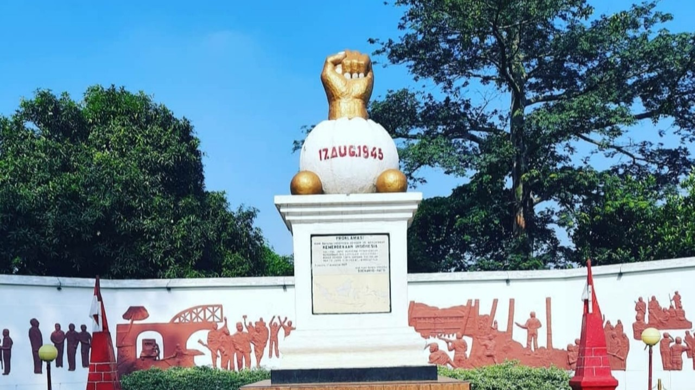
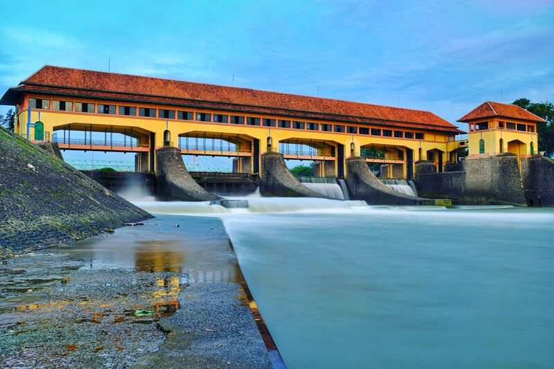
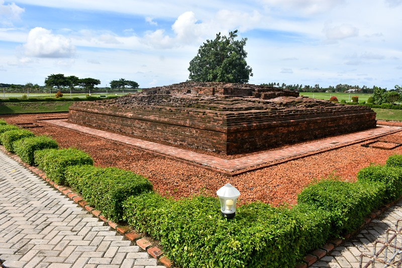

Salah satu kota yang berada di Jawa Barat. Dikenal sebagai kota dengan kawasan industri terbesar di Indonesia
bahkan di Asia Tenggara
Sejarah

Sekitar Abad XV M, agama Islam masuk ke Karawang yang dibawa oleh Ulama besar Syeikh Hasanudin bin
Yusuf Idofi, dari Champa, yang terkenal dengan sebutan Syeikh Guro, sebab
disamping ilmunya yang sangat tinggi, beliau merupakan seorang Hafidh Al-Quran yang bersuara merdu.
Kemudian ajaran agama islam tersebut dilanjutkan penyebarannya oleh para
Wali yang disebut Wali Sanga. Setelah Syeikh Quro Wafat, tidak diceritakan dimakamkan dimana. Hanya
saja, yang ada dikampung Pulobata, Desa Pulokalapa, Kecamatan Lemahabang
Wadas, Kabupaten Karawang, merupakan magom (dimana Syech Guro pernah Tinggal).
Pada masa itu daerah Karawang sebagian besar masih merupakan hutan belantara dan berawa-rawa. Hal ini
menjadikan apabila Karawang berasal dari bahasa Sunda. Ke-rawa-an artinya
tempat berawa-rawa. Nama tersebut sesuai dengan keadaan geografis Karawang yang berawa-rawa, bukti
lain yang dapat memperkuat pendapat tersebut. Selain sebagian rawa-rawa yang
masih tersisa saat ini, banyak nama tempat diawali dengan kata rawa, seperti : Rawasari, Rawagede,
Rawamerta, Rawagempol dan lain-lain.
Geografis
Wilayah Kabupaten Karawang sebagian besar dataran pantai yang luas, terhampar di bagian pantai Utara dan
merupakan endapan batuan sedimen yang dibentuk oleh bahan-bahan lepas
terutama endapan laut dan aluvium vulkanik. Sedangkan di bagian tengah kawasan perbukitan yang sebagian
besar terbentuk oleh batuan sedimen, sedang di bagian Selatan yang
merupakan wilayah limpahan dari Kawedanan Jonggol merupakan daerah perbukitan yang sejuk terdapat Gunung
Sanggabuana dengan ketinggian : 1.291 Mdpl. Wilayah selatan ini
secara iklim dan kondisi geografis berbeda dengan sebagian besar wilayah Kabupaten Karawang yang didominasi
oleh dataran rendah, datar dan beriklim panas, wilayah selatan secara
geografis dan iklim, bahkan kultur lebih mirip dengan wilayah Jonggol, Bogor.
Tempat Wisata
Selain dikenal dengan kota industri, Karawang juga mempunyai tempat-tempat wisata yang menarik untuk
dikunjungi.
Bendungan Walahar

Bendung Walahar adalah sebuah bendung yang terletak di Walahar, Klari, Karawang, Jawa Barat. Bendung ini
merupakan salah satu bangunan peninggalan masa penjajahan Belanda yang
masih ada dan kokoh berdiri di Karawang. Bendung Walahar digunakan untuk mengatur debit air sungai
Citarum serta mengairi sawah-sawah yang berada di Kabupaten Karawang seluas
87.396 hektare. Bendung Walahar membentuk waduk seluas ±15 hektare. Bendung ini berbatasan dengan
Gintungkerta sebelah utara, Anggadita sebelah barat, Kutapuhaci sebelah selatan,
dan sebelah timur berbatasan dengan Cimahi.
Candi Jiwa

Candi Jiwa merupakan peninggalan Kerajaan Hindu-Budha dan menjadi candi yang tertua di Jawa Barat.
Masyarakat sekitar dulunya mengkeramatkan area tersebut karena banyak hewan
ternak yang mati bila melewati lokasi ditemukannya candi. Dari catatan sejarah, Candi Jiwa pertama kali
ditemukan pada tahun 1984. Selain Candi Jiwa, ada beberapa situs-situs lainnya
yang dikelompokkan dalam Komplek Percandian Batujaya. Hingga kini, penelitian terhadap situs tersebut
masih terus dilakukan. Sebab diyakini masih ada sisa-sisa peninggalan
bersejarah yang terkubur di sekitar area Candi Jiwa.